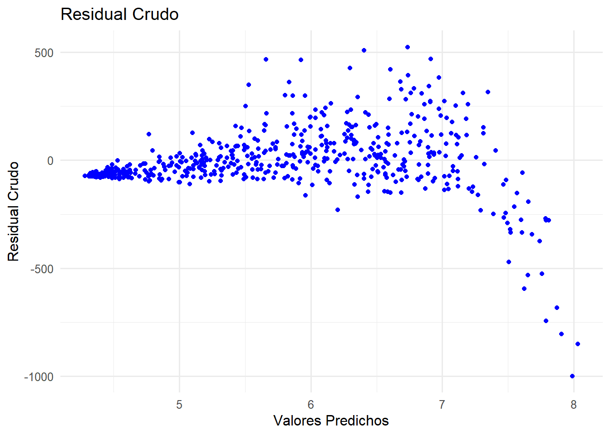
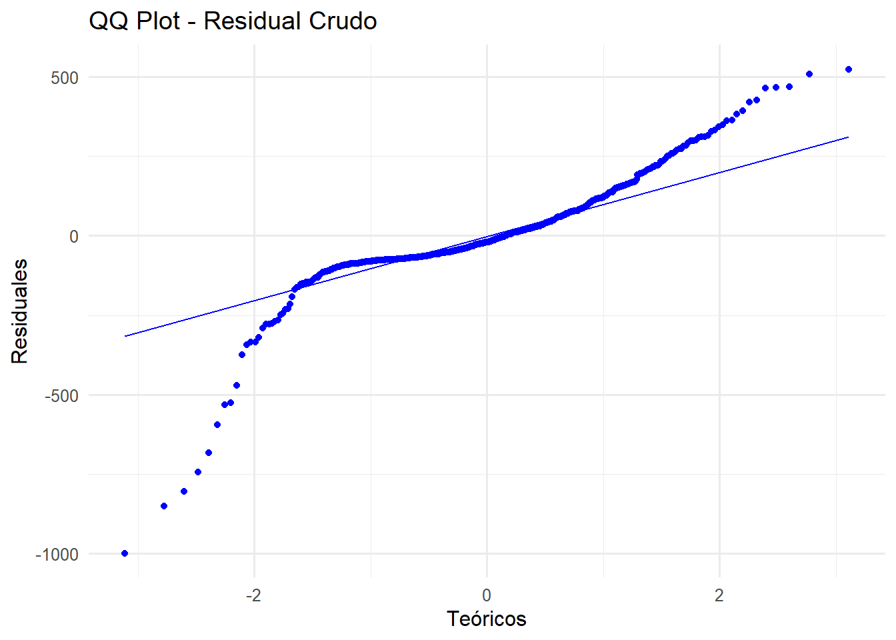
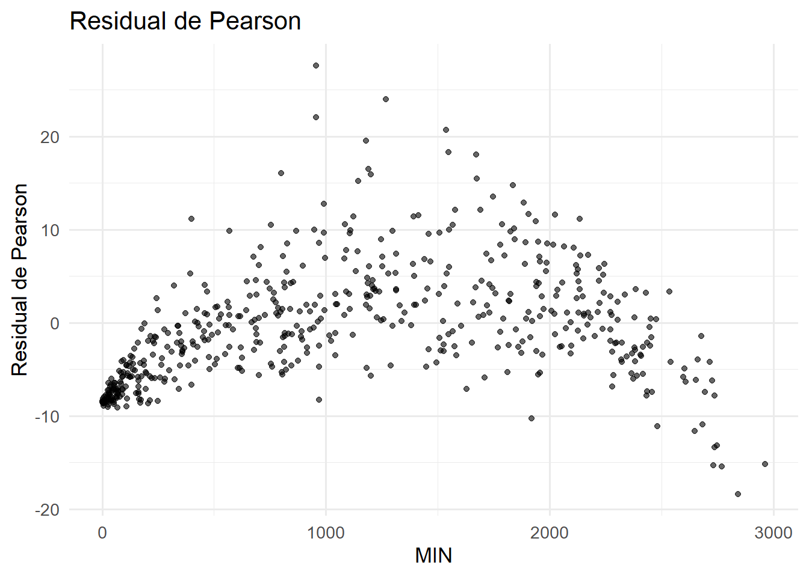
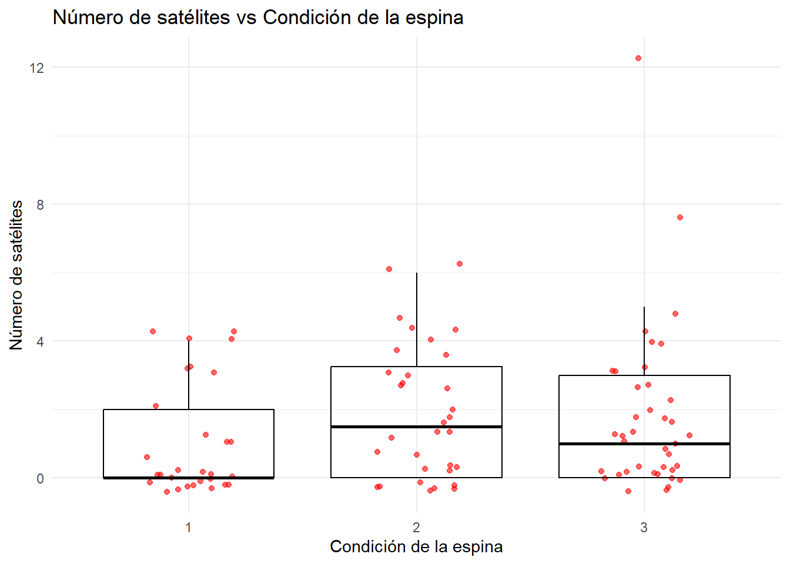
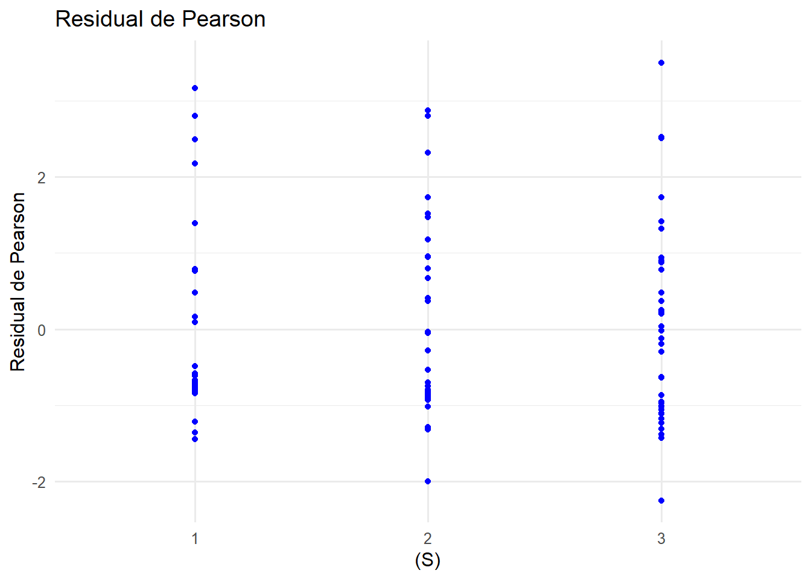
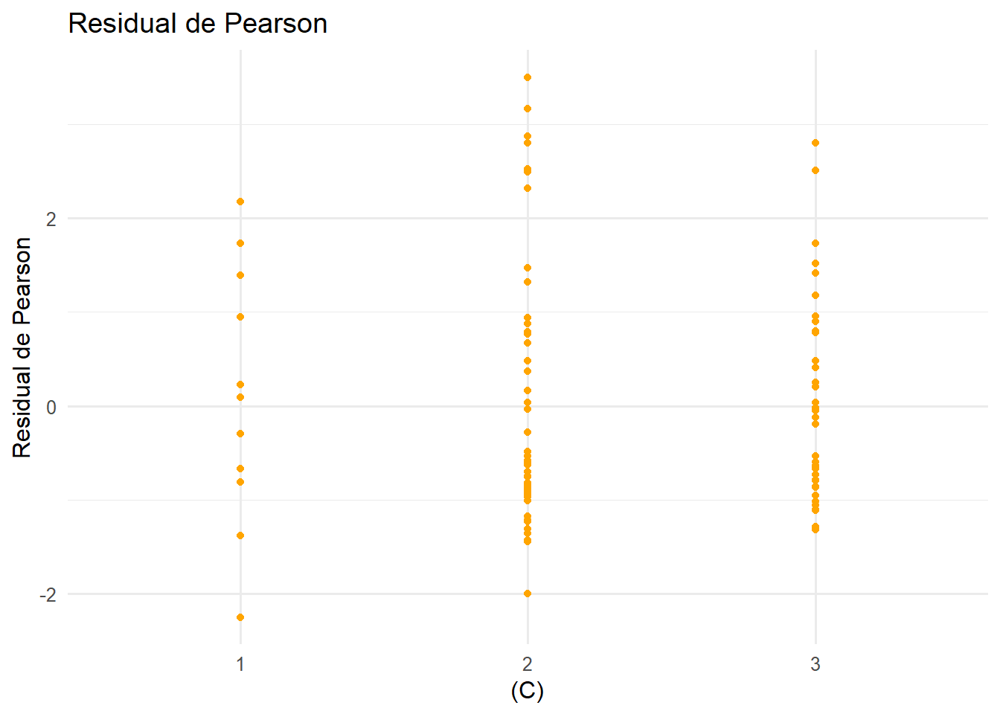
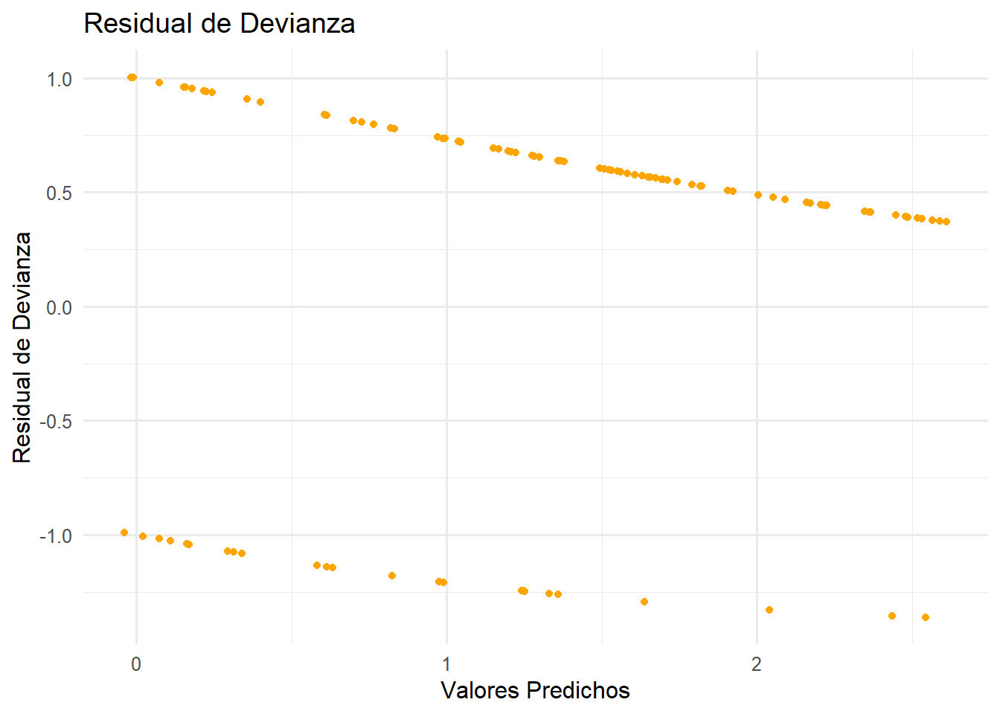
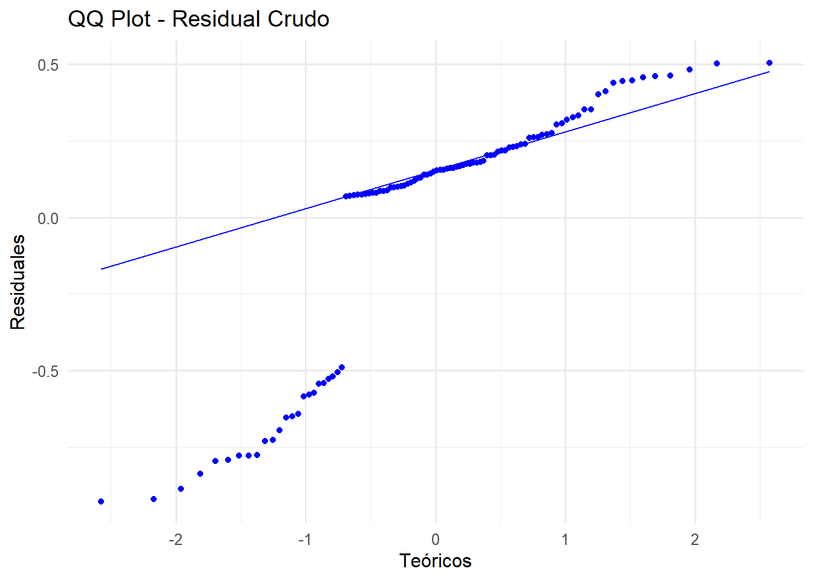
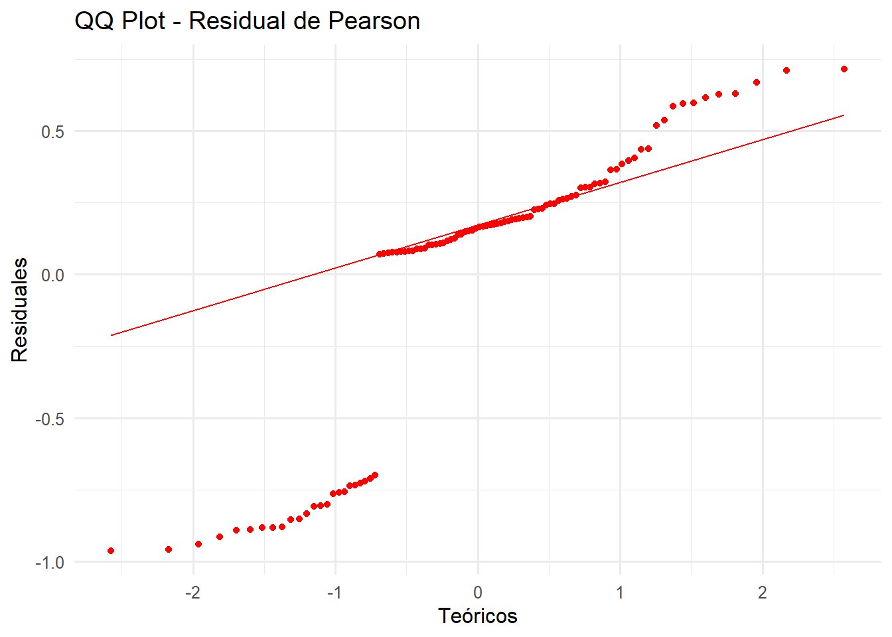
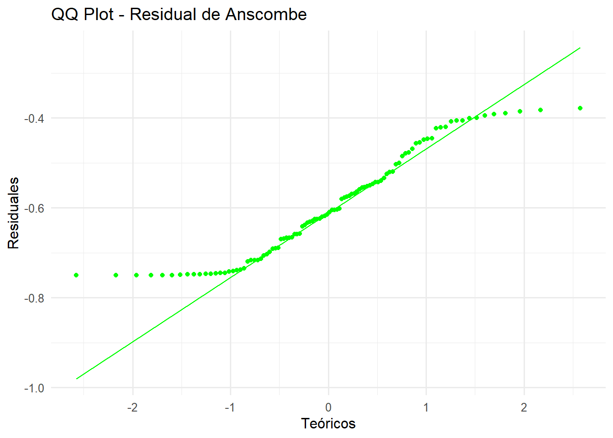

rm(list = ls())Algoritmo de Fisher Scoring
library(GGally)
library(ggplot2)
library(dplyr)
library(readxl)
library(boot)Regresión Poisson
- Sean \(Y_1, Y_2, \cdots, Y_n\) variables aleatorias independientes con distribución Poisson, tales que
\[Y_i \sim Poisson(\mu_i) \quad i=1,2,\cdots,n.\] Veamos a qué corresponde el link canónico mostrando que la Poisson pertenece a la familia exponencial de distribuciones e identificando sus componentes: La función de masa de probabilidad (PMF) de una variable aleatoria \(Y\) que sigue una distribución de Poisson, \(Y \sim Poisson(\lambda)\), donde \(\lambda > 0\) es el parámetro de tasa, es: \[ f(y \mid \lambda) = \frac{e^{-\lambda} \lambda^y}{y!} \quad y = 0, 1, 2, \dots\] Nuestro objetivo es reescribir esta PMF en la forma canónica de la familia exponencial: \[ f(y \mid \theta, \phi) = \exp\left(\frac{y\theta - b(\theta)}{a(\phi)} + c(y, \phi)\right) \]
Comenzamos tomando el logaritmo de la PMF y luego exponenciando el resultado:
\[\begin{align*} f(y \mid \lambda) &= \exp\left[ \ln\left( \frac{e^{-\lambda} \lambda^y}{y!} \right) \right] \\ &= \exp\left[ \ln(e^{-\lambda}) + \ln(\lambda^y) - \ln(y!) \right] \\ &= \exp\left[ -\lambda + y\ln(\lambda) - \ln(y!) \right] \end{align*}\]
Ahora, definimos el parámetro canónico \(\theta\). Observamos el término que multiplica a \(y\): Sea \(\theta = \ln(\lambda)\). De esta definición, podemos expresar \(\lambda\) en términos de \(\theta\): \[ \lambda = e^\theta \]
Sustituimos \(\theta\) y la expresión para \(\lambda\) en términos de \(\theta\) de nuevo en la forma exponencial de la PMF:
\[\begin{align*} f(y \mid \theta) &= \exp\left[ -e^\theta + y\theta - \ln(y!) \right] \\ &= \exp\left[ y\theta - e^\theta - \ln(y!) \right] \\ &= \exp\left[ \frac{y\theta - e^\theta}{1} - \ln(y!) \right] \end{align*}\]
De esta forma, podemos identificar los componentes de la familia exponencial:
\(\theta = \ln(\lambda)\)
\(b(\theta) = e^\theta\)
\(a(\phi) = 1\)
\(c(y, \phi) = -\ln(y!)\)
Con lo anterior, ahora sabemos que en la distribución Poisson, el parámetro canónico está dado por \(\theta_i = \ln(\mu_i)\) ya que \(\lambda_i = \mu_i\). En el contexto de un modelo de regresión, el predictor lineal \(\eta_i\) está dado por
\[\eta_i = \beta_0 + \beta_1X_1 + \beta_2X_2 + \cdots + \beta_pX_p,\] y la relación entre el predictor \(\eta_i\) y la media \(\mu_i\), en el caso de la regresión Poisson, está dada por
\[\eta_i = \ln(\mu_i) \Rightarrow \mu_i = \exp(\eta_i).\]
La función de log-verosimilitud es como sigue
\[\begin{align*} \mathcal{l}(\boldsymbol\beta) &= \sum_{i=1}^n \left[y_i\ln(\mu_i) - \mu_i - \ln(y_i!)\right]\\ &= \sum_{i=1}^n \left[y_i x_i^t \boldsymbol\beta - \exp(x_i^t \boldsymbol\beta) - \ln(y_i!)\right] \end{align*}\]
La función score (vector de primeras derivadas) está dado por
\[\frac{\partial \mathcal{l}(\boldsymbol\beta)}{\partial \boldsymbol\beta} = \sum_{i=1}^n (y_i - \mu_i)x_i.\] La Matriz de Información de Fisher es como sigue
\[\mathcal{J}(\beta) = Inf = X^tWX\] donde
\[W = diag\left(\frac{\left(\frac{\partial \mu_i}{\partial \eta_i}\right)^2}{Var(y_i)}\right)\] \[\frac{\partial \mu_i}{\partial \eta_i} = \mu_i, \quad \quad \quad \frac{\partial \eta_i}{\partial \mu_i} = \frac{1}{\mu_i}\] Como en la distribución Poisson, \(Var(Y_i) = \mu_i\), se tiene que
\[w_{ii} = \frac{\mu_i^2}{\mu_i} =\mu_i\] y la variable ajustada \(\widetilde{y}\) está dada por \[\widetilde{y} = \eta_i + (y_i - \mu_i)\frac{\partial \eta_i}{\partial \mu_i} = \eta_i + (y_i - \mu_i)\frac{1}{\mu_i}\]
De esta forma, el Algoritmo de Fisher-Scoring queda determinado por los siguientes pasos:
- Iniciar el algoritmo con un valor inicial para \(\boldsymbol\beta\). Se usará una estimación inicial de \(\beta_0^{(0)}\) usando la media global de \(y\)
\[ \beta_0^{(0)} = \log\left(\frac{1}{n}\sum_{i=1}^n y_i\right), \quad \beta_1^{(0)} = 0, \quad \cdots, \quad \beta_p^{(0)} = 0. \]
- Obtener \(\boldsymbol\beta^{(k+1)}\) a partir de \(\boldsymbol\beta^{(k)}\) usando la siguiente expresión
\[\boldsymbol\beta^{(k+1)} = \left(X^tW^{(k)}X\right)^{-1}X^tW^{(k)}\widetilde{y}^{(k)}.\]
- Repetir (2) hasta satisfacer un criterio de convergencia. El criterio de convergencia que se usará en este caso es el siguiente
\[\max_j \left| \beta_j^{(k+1)} - \beta_j^{(k)} \right| < \epsilon, \quad \quad \epsilon=0.0000001\]
Residuales
El estudio de los residuales es importante ya que ayuda a evaluar la calidad del modelo y detectar posibles desviaciones de los supuestos del mismo. En este caso se ha trabajado con los residuales crudos, los residuales de Pearson, los residuales de devianza y los residuales de Anscombe.
Residuales crudos (o de respuesta): estos residuales son normalmente usados en modelos de regresión lineal; en modelos lineales generalizados realmente no son tan eficientes. Sin embargo, se decidió usar este tipo de residuales para fines de comparación. Estos residuales representan la diferencia entre el valor observado y el valor ajustado de la media:
\[r = y-\hat{\mu}\]
Residuales de Pearson: estandariza el residual crudo dividiéndolo por la desviación estándar estimada para la distribución en cuestión. La formula general y en el caso de la Poisson son:
\[r_{P}=\frac{y-\hat{\mu}}{\sqrt{Var(\hat{\mu})}}\Longrightarrow\frac{y-\hat{\mu}}{\sqrt{\hat{\mu}}}\]
Residuales de devianza: los residuos de devianza, como conjunto, suelen ser más cercanos a la normalidad con distribuciones GLM no normales que los residuos de Pearson. La devianza compara la log-verosimilitud entre el modelo saturado que ajusta perfectamente a las observaciones, con la del modelo ajustado. Se quiere que la devianza sea lo más pequeña posible.
\[r_{D}=sign(y-\mu)\sqrt{d_{i}},\hspace{3cm}donde:d_{i}=\sqrt{2 \left[ \ell(y_i; y_i) - \ell(\hat{\mu}_i; y_i) \right]}\] Para el caso de la Poisson:
\[r_{D}=sign(y-\mu)\sqrt{2\left(y\cdot log(\frac{y}{\mu})-(y-\mu)\right)}\]
Residuales de Anscombe: como los residuales de Pearson suelen ser sesgados para distribuciones no normales y esto ocasionaba que no podía tener propiedades similares a la de los residuos de la teoría normal, Anscombe propuso definir un residuo utlizando una función \(A(y)\) en lugar de \(y\); la formula general y en el caso de la Poisson son:
\[A(\cdot)=\int \frac{d\mu}{V^{1/3}(\mu)}\Longrightarrow\int\frac{d\mu}{\mu^{1/3}}=\frac{3}{2}\mu^{2/3}\]
Para la distribución Poisson:
\[r_{A}=\frac{\frac{3}{2}(y^{2/3}-\mu^{2/3})}{\mu^{1/6}}\]
Ejemplo 1 regresión Poisson - Jugadores de Baloncesto
A continuación se presenta el algoritmo para encontrar una aproximación de \(\boldsymbol\beta\) usando datos reales.
Datos de jugadores de baloncesto de la temporada 2022-2023, los cuales incluyen la edad del jugador (AGE), tiempo en minutos jugado en la temporada (MIN), juegos participados (GP), tiros de campo hechos (FGM), tiros de campo intentados (FGA), tiros de campo hechos de 3 puntos (FG3M), tiros de campo intentados de 3 puntos (FGA) y puntos realizados en la temporada (PTS).
# Ìmportamos los datos y seleccionamos las variables de interés
players <- read_excel("players_202223.xlsx") %>%
select(AGE, MIN, GP, FGM, FGA, FG3M, FG3A, FTM, FTA, PTS)players %>%
ggpairs(
upper = list(continuous = wrap("cor", size = 2)),
diag = list(continuous = wrap("barDiag", colour = "burlywood")),
lower = list(continuous = wrap("points", alpha = 0.5, shape = 20,
fill = "lightblue")),
axisLabels = "none") +
theme(strip.text = element_text(size = 6))
En la matriz de dispersión realizada se usó el coeficiente de correlación de Pearson, el cuál nos muestra que la mayoría de las variables tienen una alta correlación lineal con la variable respuesta, puntos realizados en la temporada (PTS).
Se puede evidenciar que entre las covariables también se presentan algunas correlaciones casi perfectas, como se presentan entre las variables FGM y FGA, FG3M y FG3A, y FTM y FTA, lo cual tiene sentido ya que los pares de variables mencionadas deberían estar relacionadas entre sí, ya que a nivel general una variable es el número de intentos totales de tiros, mientras que la otra es cuántos de esos tiros lograron ser encestados.
Por otro lado, se observa una baja correlación lineal entre la variable AGE y el resto de las variables, incluida la variable respuesta PTS. Además, en los gráficos de dispersión no se evidencia ningún tipo de correlación entre estas variables, ya que los datos se encuentran muy dispersos.
# Matriz diseño y vector de la variable respuesta
x1 <- players %>% select(-last_col())
X <- model.matrix(~ ., data = x1) # Matriz diseño, con intercepto
y <- players$PTS # Variable respuestaAlgoritmo de Fisher-Scoring
# Creación de la función
fisher_scoring_poisson <- function(y, X, beta_init, tol = 1e-7, max_iter = 100){
# Nombramos un objeto donde se guardará el beta inicial (beta_init)
beta <- beta_init
# iniciamos el bucle
for (iter in 1:max_iter){
# creamos un objeto "eta" que será la parte sistemática del modelo
eta <- X %*% beta
# creamos un objeto "mu" donde se guarda el despeje de la media de "eta"
mu <- exp(eta)
# creamos la matriz diagonal "W"
W <- diag(as.vector(mu))
# creamos el objeto z (variable de trabajo y^~)
z <- eta + (y - mu) / mu
# obtenemos el nuevo beta
beta_new <- solve(t(X) %*% W %*% X) %*% (t(X) %*% W %*% z)
# guardamos la matriz de varianzas y covarianzas de los betas
cov_beta <- solve(t(X) %*% W %*% X)
if (max(abs(beta_new - beta)) < tol) {
message("El algoritmo convergió en la iteración ", iter)
mu_hat <- as.vector(exp(X %*% beta_new))
# residual crudo
residual <- y - mu_hat
# residual de pearson
residual_pearson <- (y - mu_hat) / sqrt(mu_hat)
#Residual Anscombe
residual_anscombe <- (3/2) * (y^(2/3) - mu_hat^(2/3)) / (mu_hat^(1/6))
# Residual de devianza
residual_deviance <- sign(y - mu_hat) *
sqrt(2 * (y * log(ifelse(y == 0, 1, y / mu_hat)) - (y - mu_hat)))
return(list( beta = as.vector(beta_new), predichos = mu_hat, covarianza = cov_beta,
residual = residual,
residual_pearson = residual_pearson,
residual_anscombe = residual_anscombe,
residual_deviance = residual_deviance))
}
beta <- beta_new
}
warning("El algoritmo no convergió")
return(NULL)
}Aplicamos la función del algoritmo a los datos de jugadores, inicializándolo con un \(\boldsymbol{\beta}\) inicial
beta_inicial <- c(log(mean(y)), rep(0, ncol(X)-1)) # beta inicial
regresion_poisson <- fisher_scoring_poisson(y = y, X = X, beta_init = beta_inicial)El algoritmo convergió en la iteración 7El vector de parámetros estimados \(\boldsymbol\beta\) es el siguiente
names(regresion_poisson$beta) <- c("Intercept", "AGE", "MIN", "GP", "FGM",
"FGA", "FG3M", "FG3A", "FTM", "FTA")
regresion_poisson$beta Intercept AGE MIN GP FGM
4.1116424116 0.0076175147 0.0000747274 0.0181945865 0.0019076539
FGA FG3M FG3A FTM FTA
0.0002784068 0.0036404818 -0.0011454886 0.0001737093 0.0002852445 y la estimación de los parámetros usando la función glm del paquete stats es la siguiente
modelo_poisson_glm <- glm(y ~ X - 1, family = poisson(link = "log"))
names(modelo_poisson_glm$coefficients) <- names(regresion_poisson$beta)
modelo_poisson_glm$coefficients Intercept AGE MIN GP FGM
4.1116424116 0.0076175147 0.0000747274 0.0181945865 0.0019076539
FGA FG3M FG3A FTM FTA
0.0002784068 0.0036404818 -0.0011454886 0.0001737093 0.0002852445 En la siguiente tabla se puede ver la comparación con ambos métodos:
| Variable | fisher_scoring_poisson | glm |
|---|---|---|
| (Intercept) | \(\hat{\beta_0} = 4.111\) | \(\hat{\beta_0} = 4.112\) |
| AGE | \(\hat{\beta_1} = 0.007617\) | \(\hat{\beta_1} = 0.007618\) |
| MIN | \(\hat{\beta_2} = 0.00007472\) | \(\hat{\beta_2} = 0.00007473\) |
| GP | \(\hat{\beta_3} = 0.01819\) | \(\hat{\beta_3} = 0.01819\) |
| FGM | \(\hat{\beta_4} = 0.001907\) | \(\hat{\beta_4} = 0.001908\) |
| FGA | \(\hat{\beta_5} = 0.0002784\) | \(\hat{\beta_5} = 0.0002784\) |
| FG3M | \(\hat{\beta_6} = 0.003640\) | \(\hat{\beta_6} = 0.003640\) |
| FG3A | \(\hat{\beta_7} = -0.001145\) | \(\hat{\beta_7} = -0.001145\) |
| FTM | \(\hat{\beta_8} = 0.0001737\) | \(\hat{\beta_8} = 0.0001737\) |
| FTA | \(\hat{\beta_9} = 0.0002852\) | \(\hat{\beta_9} = 0.0002852\) |
Los resultados parecen ser exactamente los mismos, a continuación lo comprobamos
all.equal(regresion_poisson$beta, modelo_poisson_glm$coefficients)[1] TRUELa matriz de covarianza estimada \(\hat{Cov}\left(\boldsymbol\beta\right)\) obtenida mediante el algoritmo de Fisher-Scoring coincide con la obtenida a través de la función glm, salvo por algunas diferencias numéricas muy pequeñas
all.equal(regresion_poisson$covarianza, vcov(modelo_poisson_glm))[3][1] "Mean relative difference: 1.183917e-07"Las desviaciones estándar estimadas con ambos métodos son las siguientes:
sqrt(diag(regresion_poisson$covarianza)) (Intercept) AGE MIN GP FGM FGA
1.573243e-02 4.749512e-04 8.853810e-06 2.315808e-04 7.836140e-05 4.481510e-05
FG3M FG3A FTM FTA
2.317290e-04 1.008010e-04 9.716799e-05 8.408862e-05 sqrt(diag(vcov(modelo_poisson_glm))) Intercept AGE MIN GP FGM FGA
1.573243e-02 4.749512e-04 8.853809e-06 2.315807e-04 7.836140e-05 4.481510e-05
FG3M FG3A FTM FTA
2.317290e-04 1.008010e-04 9.716799e-05 8.408862e-05 Vemos que son exactamente las mismas.
A continuación, se muestran gráficamente los cuatro tipos de residuales calculados: residuales crudos, residuales de pearson, residuales de Anscombe y residuales de devianza
df_residuals <- data.frame(
AGE = players$AGE,
MIN = players$MIN,
GP = players$GP,
FGM = players$FGM,
FGA = players$FGA,
FG3M = players$FG3M,
FG3A = players$FG3A,
FTM = players$FTM,
FTA = players$FTA,
predichos = regresion_poisson$predichos,
residual = regresion_poisson$residual,
residual_pearson = regresion_poisson$residual_pearson,
residual_anscombe = regresion_poisson$residual_anscombe,
residual_deviance = regresion_poisson$residual_deviance
)# Gráfico de los cuatro tipos de residuales
p1 <- ggplot(df_residuals, aes(x = log(predichos), y = residual)) +
geom_point(color = 'blue') +
labs(title = 'Residual Crudo', x = 'Valores Predichos', y = 'Residual Crudo') +
theme_minimal(12)
p2 <- ggplot(df_residuals, aes(x = log(predichos), y = residual_pearson)) +
geom_point(color = 'red') +
labs(title = 'Residual de Pearson', x = 'Valores Predichos', y = 'Residual de Pearson') +
theme_minimal(12)
p3 <- ggplot(df_residuals, aes(x = log(predichos), y = residual_anscombe)) +
geom_point(color = 'green') +
labs(title = 'Residual de Anscombe', x = 'Valores Predichos', y = 'Residual de Anscombe') +
theme_minimal(12)
p4 <- ggplot(df_residuals, aes(x = log(predichos), y = residual_deviance)) +
geom_point(color = 'orange') +
labs(title = 'Residual de Devianza', x = 'Valores Predichos', y = 'Residual de Devianza') +
theme_minimal(12)p1; p2; p3; p4

Dado que en la distribución Poisson la varianza de cada observación depende de su media, los residuales crudos se ven afectados por esta relación. Esto hace que la escala de los residuales \(r_i = y_i - \hat{\mu}_i\) varíe dependiendo del tamaño de \(\hat{\mu}_i\). Naturalmente tendremos residuales pequeños cuando los valores predichos sean pequeños, y residuales grandes cuando los valores predichos sean grandes, haciendo evidente la heteroscedasticidad de los residuales.
Si el modelo ajustara bien los datos, los residuales de Pearson debería solucionar la heteroscedasticidad presentada en los residuales crudos, y de esta forma no se reflejarían patrones en los residuales. En este caso, aún observamos patrones posiblemente no capturados por el modelo.
Los residuales de Anscombe y Devianza también exhiben patrones no capturados por el modelo.
A continuación, se presentan los QQ-plots de los residuales con el fin de evaluar su aproximación a la distribución normal
# qq-plots de los residuales
qq1 <- ggplot(df_residuals, aes(sample = residual)) +
stat_qq(color = "blue") +
stat_qq_line(color = "blue") +
labs(title = "QQ Plot - Residual Crudo", x = "Teóricos", y = "Residuales") +
theme_minimal(12)
qq2 <- ggplot(df_residuals, aes(sample = residual_pearson)) +
stat_qq(color = "red") +
stat_qq_line(color = "red") +
labs(title = "QQ Plot - Residual de Pearson", x = "Teóricos", y = "Residuales") +
theme_minimal(12)
qq3 <- ggplot(df_residuals, aes(sample = residual_anscombe)) +
stat_qq(color = "green") +
stat_qq_line(color = "green") +
labs(title = "QQ Plot - Residual de Anscombe", x = "Teóricos", y = "Residuales") +
theme_minimal(12)
qq4 <- ggplot(df_residuals, aes(sample = residual_deviance)) +
stat_qq(color = "orange") +
stat_qq_line(color = "orange") +
labs(title = "QQ Plot - Residual de Devianza", x = "Teóricos", y = "Residuales") +
theme_minimal(12)qq1; qq2; qq3; qq4
En todos los casos, se observa una desviación evidente respecto a la normalidad, especialmente en las colas de las distribuciones. Esto sugiere la posible presencia de observaciones atípicas, un mal ajuste del modelo o datos influyentes que afectan la calidad del ajuste.
Con el fin de explicar los patrones no explicados en los residuales, miramos los gráficos de los residuales contra las covariables, en aras de encontrar posibles relaciones no lineales y otro tipo de patrones
a1 <- ggplot(df_residuals, aes(x = AGE, y = residual_pearson)) +
geom_point(color = 'black', alpha = 0.6) +
labs(title = 'Residual de Pearson', x = 'AGE', y = 'Residual de Pearson') +
theme_minimal(13)
a2 <- ggplot(df_residuals, aes(x = MIN, y = residual_pearson)) +
geom_point(color = 'black', alpha = 0.6) +
labs(title = 'Residual de Pearson', x = 'MIN', y = 'Residual de Pearson') +
theme_minimal(13)
a3 <- ggplot(df_residuals, aes(x = GP, y = residual_pearson)) +
geom_point(color = 'black', alpha = 0.6) +
labs(title = 'Residual de Pearson', x = 'GP', y = 'Residual de Pearson') +
theme_minimal(13)
a4 <- ggplot(df_residuals, aes(x = FGM, y = residual_pearson)) +
geom_point(color = 'black', alpha = 0.6) +
labs(title = 'Residual de Pearson', x = 'FGM', y = 'Residual de Pearson') +
theme_minimal(13)
a5 <- ggplot(df_residuals, aes(x = FGA, y = residual_pearson)) +
geom_point(color = 'black', alpha = 0.6) +
labs(title = 'Residual de Pearson', x = 'FGA', y = 'Residual de Pearson') +
theme_minimal(13)
a6 <- ggplot(df_residuals, aes(x = FG3M, y = residual_pearson)) +
geom_point(color = 'black', alpha = 0.6) +
labs(title = 'Residual de Pearson', x = 'FG3M', y = 'Residual de Pearson') +
theme_minimal(13)
a7 <- ggplot(df_residuals, aes(x = FG3A, y = residual_pearson)) +
geom_point(color = 'black', alpha = 0.6) +
labs(title = 'Residual de Pearson', x = 'FG3A', y = 'Residual de Pearson') +
theme_minimal(13)
a8 <- ggplot(df_residuals, aes(x = FTM, y = residual_pearson)) +
geom_point(color = 'black', alpha = 0.6) +
labs(title = 'Residual de Pearson', x = 'FTM', y = 'Residual de Pearson') +
theme_minimal(13)
a9 <- ggplot(df_residuals, aes(x = FTA, y = residual_pearson)) +
geom_point(color = 'black', alpha = 0.6) +
labs(title = 'Residual de Pearson', x = 'FTA', y = 'Residual de Pearson') +
theme_minimal(13)a1; a2; a3; a4; a5; a6; a7; a8; a9


Vemos en especial las covariables MIN, FGM y FGA presentan un comportamiento similar al de los residuales, los que nos hace pensar que el modelo no está capturando correctamente este comportamiento similar al de una curva cuadrática. Valdría la pena explorar transformaciones de estas covariables o añadir términos cuadráticos en el modelo.
Ejemplo 1 regresión Poisson - Cangrejos
crabs <- data.frame(
C = as.factor(c(2,3,3,2,2,1,2,1,3,2,2,2,1,2,2,2,2,3,3,2,2,2,2,3,3,2,2,2,2,3,
3,3,2,3,2,2,2,3,3,2,2,1,1,3,3,3,2,2,3,3,3,3,2,2,3,2,3,2,1,3,
2,3,1,1,2,2,3,2,3,2,3,2,2,2,3,3,2,2,1,2,2,2,1,2,2,3,2,2,1,2,
3,3,3,3,3,1,3,2,3,2)),
S = as.factor(c(3,3,3,3,1,2,1,1,2,2,1,3,1,1,1,2,2,2,2,2,2,1,2,3,3,1,3,1,1,3,
3,3,3,2,2,1,1,3,2,1,3,3,1,2,3,2,1,1,3,1,2,3,2,2,1,2,1,1,3,1,
3,3,1,1,2,1,2,2,2,2,1,3,3,3,3,2,2,1,1,2,2,2,2,3,3,3,3,3,3,3,
3,2,3,3,3,3,3,3,2,1)),
W = c(28.3,26.0,26.0,21.0,21.0,25.0,26.0,24.9,25.0,24.7,26.5,24.8,24.9,26.0,
28.7,30.3,26.2,27.5,30.0,28.2,30.5,30.3,30.0,26.2,28.5,29.5,27.0,29.0,
28.7,26.5,26.5,27.3,26.3,30.0,29.0,27.2,27.0,26.5,26.5,25.5,26.5,26.5,
22.0,27.3,26.6,25.0,25.0,30.2,28.7,24.9,24.5,25.2,24.0,22.9,26.2,24.4,
26.3,24.5,27.9,30.5,28.2,27.6,23.0,23.9,22.9,25.8,25.8,24.1,28.0,26.0,
24.5,24.5,24.2,28.5,24.7,29.0,27.0,23.7,27.0,24.2,24.2,25.1,27.5,29.3,
26.3,29.4,26.2,26.2,24.1,27.0,26.5,28.5,24.7,25.2,25.3,25.3,29.3,27.4,
28.0,24.5),
Wt = c(3.05,2.60,2.45,1.85,2.05,2.30,2.10,2.10,2.00,1.90,2.80,2.10,2.10,2.50,
3.20,3.60,2.20,2.75,3.05,2.95,3.50,3.00,3.40,2.30,2.40,2.55,2.25,2.30,
3.20,1.30,1.97,2.90,2.30,3.05,3.30,2.75,2.25,2.00,2.20,2.25,1.97,1.60,
1.90,2.90,2.30,2.10,2.10,3.28,3.20,2.30,2.05,2.10,2.00,1.60,2.40,1.90,
2.05,1.95,3.05,3.20,2.80,2.85,3.00,1.85,1.90,2.20,2.20,1.80,2.62,2.30,
2.00,2.00,2.20,3.00,2.55,3.10,2.95,1.80,2.00,2.20,1.65,1.80,2.30,3.23,
2.90,3.10,2.30,2.17,1.95,2.63,2.35,3.00,2.55,2.00,1.90,1.90,3.23,2.90,
3.00,2.00),
Sa = c(8,4,3,0,0,3,0,1,3,0,4,0,1,1,0,4,3,0,5,4,6,4,4,0,3,0,3,0,0,0,1,1,2,4,0,
4,4,0,0,0,0,0,0,1,1,2,0,2,1,0,0,1,0,0,0,0,0,1,0,3,3,2,3,0,0,0,2,1,0,1,
0,0,0,1,0,4,1,0,3,3,3,0,6,12,0,3,0,2,1,4,0,1,0,1,2,2,5,4,2,0)
)Usando los datos obtenidos del libro “An Introduction to Categorycal Data Analysis Alan Agresti segunda edición”, donde se registraron datos del número de satélites (Sa) que tiene una cangreja de acuerdo al color (C), condición de la espina (S), ancho (W) y peso (Wt):
| Variable | Tipo de Variables |
|---|---|
| C | Cualitativa nominal |
| S | Cualitativa nominal |
| W | Cuantitativa continua |
| Wt | Cuantitativa continua |
| Sa | Cuantitativa discreta |
Exploremos las relaciones entre la variable respuesta (número de satélites Sa) y las covariables. A continuación se muestra la relación entre el número de satélites (Sa) con las variables cualitativas color (C) y condición de la espina (S)
ggplot(crabs, aes(x = C, y = Sa)) +
geom_jitter(width = 0.2, alpha = 0.6, color = "blue") +
geom_boxplot(alpha = 0, color = "black") + # overlay transparent boxplot
labs(title = "Número de satélites vs Color",
x = "Color",
y = "Número de satélites") +
theme_minimal()ggplot(crabs, aes(x = S, y = Sa)) +
geom_jitter(width = 0.2, alpha = 0.6, color = "red") +
geom_boxplot(alpha = 0, color = "black") +
labs(title = "Número de satélites vs Condición de la espina",
x = "Condición de la espina",
y = "Número de satélites") +
theme_minimal()

Aunque las diferencias en el número de satélites según el color y la condición de la espina no son inmediatamente evidentes, los datos sugieren una posible asociación entre estas variables. En particular, el número de satélites parece variar en función del color y la condición de la espina de los cangrejos, lo que indica un efecto de interacción que merece un análisis más detallado.
crabs[,-c(1,2)] %>%
ggpairs(
upper = list(continuous = wrap("cor", size = 3)),
diag = list(continuous = wrap("barDiag", colour = "burlywood")),
lower = list(continuous = wrap("points", alpha = 0.5, shape = 20,
fill = "lightblue")),
axisLabels = "none")Observamos una correlación moderada \(\sim 0.5\) entre el número de salélites (Sa) y el peso y el ancho de la cangreja.
Aplicamos en algoritmo de Fisher-Scoring a los datos de cangrejos
X.c <- model.matrix(~., data=crabs[,-5])
modelos_crangrejos <- fisher_scoring_poisson(crabs[,5], X = X.c,
beta_init = c(log(mean(crabs[,5])), rep(0, ncol(X.c)-1)))El algoritmo convergió en la iteración 6names(modelos_crangrejos$beta) <- c("Intercept", "C2", "C3" , "S2", "S3" , "W", "Wt")
modelos_crangrejos$beta Intercept C2 C3 S2 S3 W Wt
-6.4407728 -0.4973794 -0.8020200 0.5369707 0.6290147 0.2159377 0.4628472 modelo_cangrejos_glm <- glm(crabs[,5] ~ X.c - 1, family = poisson(link = "log"))
names(modelo_cangrejos_glm$coefficients) <- names(modelos_crangrejos$beta)
modelo_cangrejos_glm$coefficients Intercept C2 C3 S2 S3 W Wt
-6.4407727 -0.4973794 -0.8020200 0.5369707 0.6290147 0.2159377 0.4628472 En la siguiente tabla se puede ver la comparación con ambos métodos:
| Variable | fisher_scoring_poisson | glm |
|---|---|---|
| (Intercept) | \(\hat{\beta}_0 = -6.4407728\) | \(\hat{\beta}_0 = -6.4407727\) |
| C2 | \(\hat{\beta}_1 = -0.4973794\) | \(\hat{\beta}_1 = -0.4973794\) |
| C3 | \(\hat{\beta}_2 = -0.8020200\) | \(\hat{\beta}_2 = -0.8020200\) |
| S2 | \(\hat{\beta}_3 = 0.5369707\) | \(\hat{\beta}_3 = 0.5369707\) |
| S3 | \(\hat{\beta}_4 = 0.6290147\) | \(\hat{\beta}_4 = 0.6290147\) |
| W | \(\hat{\beta}_5 = 0.2159377\) | \(\hat{\beta}_5 = 0.2159377\) |
| Wt | \(\hat{\beta}_6 = 0.4628472\) | \(\hat{\beta}_6 = 0.4628472\) |
Los resultados son exactemente los mismos.
La matriz de covarianza estimada obtenida mediante el algoritmo de Fisher-Scoring coincide con la obtenida a través de la función glm, salvo por algunas diferencias numéricas muy pequeñas
all.equal(modelos_crangrejos$covarianza, vcov(modelo_cangrejos_glm))[3][1] "Mean relative difference: 0.0001285517"Las desviaciones estándar estimadas con ambos métodos son las siguientes:
sqrt(diag(modelos_crangrejos$covarianza))(Intercept) C2 C3 S2 S3 W
1.4549473 0.2596427 0.2720798 0.2263766 0.2219134 0.0720621
Wt
0.2710751 sqrt(diag(vcov(modelo_cangrejos_glm))) Intercept C2 C3 S2 S3 W Wt
1.45485487 0.25963417 0.27207345 0.22636651 0.22190313 0.07205829 0.27106459 Son exactamente las mismas.
A continuación, se muestran gráficamente los cuatro tipos de residuales calculados: residuales crudos, residuales de pearson, residuales de Anscombe y residuales de devianza, frente a los valores predichos
df_residuals.c <- data.frame(
C=crabs$C,
S=crabs$S,
W=crabs$W,
Wt=crabs$Wt,
predichos = modelos_crangrejos$predichos,
residual = modelos_crangrejos$residual,
residual_pearson = modelos_crangrejos$residual_pearson,
residual_anscombe = modelos_crangrejos$residual_anscombe,
residual_deviance = modelos_crangrejos$residual_deviance
)# Gráfico de los tres tipos de residuales
c1 <- ggplot(df_residuals.c, aes(x = log(predichos), y = residual)) +
geom_point(color = 'blue') +
labs(title = 'Residual Crudo', x = 'Valores Predichos', y = 'Residual Crudo') +
theme_minimal(12)
c2 <- ggplot(df_residuals.c, aes(x = log(predichos), y = residual_pearson)) +
geom_point(color = 'red') +
labs(title = 'Residual de Pearson', x = 'Valores Predichos', y = 'Residual de Pearson') +
theme_minimal(12)
c3 <- ggplot(df_residuals.c, aes(x = log(predichos), y = residual_anscombe)) +
geom_point(color = 'green') +
labs(title = 'Residual de Anscombe', x = 'Valores Predichos', y = 'Residual de Anscombe') +
theme_minimal(12)
c4 <- ggplot(df_residuals.c, aes(x = log(predichos), y = residual_deviance)) +
geom_point(color = 'orange') +
labs(title = 'Residual de Devianza', x = 'Valores Predichos', y = 'Residual de Devianza') +
theme_minimal(12)c1; c2; c3; c4
En todos los casos se puede evidenciar que los residuales presentan un patrón no aleatorio, esto sugiere que hay presencia de patrones en alguna de las covariables que no ha sido adecuadamente modelada.
A continuación, se presentan los QQ-plots de los residuales con el fin de evaluar su aproximación a la distribución normal
# qq-plots de los residuales
qq1 <- ggplot(df_residuals.c, aes(sample = residual)) +
stat_qq(color = "blue") +
stat_qq_line(color = "blue") +
labs(title = "QQ Plot - Residual Crudo", x = "Teóricos", y = "Residuales") +
theme_minimal(12)
qq2 <- ggplot(df_residuals.c, aes(sample = residual_pearson)) +
stat_qq(color = "red") +
stat_qq_line(color = "red") +
labs(title = "QQ Plot - Residual de Pearson", x = "Teóricos", y = "Residuales") +
theme_minimal(12)
qq3 <- ggplot(df_residuals.c, aes(sample = residual_anscombe)) +
stat_qq(color = "green") +
stat_qq_line(color = "green") +
labs(title = "QQ Plot - Residual de Anscombe", x = "Teóricos", y = "Residuales") +
theme_minimal(12)
qq4 <- ggplot(df_residuals.c, aes(sample = residual_deviance)) +
stat_qq(color = "orange") +
stat_qq_line(color = "orange") +
labs(title = "QQ Plot - Residual de Devianza", x = "Teóricos", y = "Residuales") +
theme_minimal(12)qq1; qq2; qq3; qq4


Los residuales no se ajustan a la distribución normal.
Además se graficaron los residuales contra las diferentes variables, para darnos una idea de que podría ser el problema:
# Gráfico de los residuales de Pearson contra las covariables
c1 <- ggplot(df_residuals.c, aes(x = S, y = residual_pearson)) +
geom_point(color = 'blue') +
labs(title = 'Residual de Pearson', x = '(S)', y = 'Residual de Pearson') +
theme_minimal(12)
c2 <- ggplot(df_residuals.c, aes(x = W, y = residual_pearson)) +
geom_point(color = 'red') +
labs(title = 'Residual de Pearson', x = '(W)', y = 'Residual de Pearson') +
theme_minimal(12)
c3 <- ggplot(df_residuals.c, aes(x = Wt, y = residual_pearson)) +
geom_point(color = 'green') +
labs(title = 'Residual de Pearson', x = '(Wt)', y = 'Residual de Pearson') +
theme_minimal(12)
c4 <- ggplot(df_residuals.c, aes(x = C, y = residual_pearson)) +
geom_point(color = 'orange') +
labs(title = 'Residual de Pearson', x = '(C)', y = 'Residual de Pearson') +
theme_minimal(12)c1; c2; c3; c4

En los gráficos de los residuales frente a las variables se puede ver que las variables de ancho y peso parecen estar bien modeladas, mientras que las variables categóricas de la condición de la espina y el color pueden estar necesitando interacciones.
X_completa <- model.matrix(Sa
~ C + S + W + Wt +
C:S + C:W + C:Wt +
S:W + S:Wt,
data = crabs
)
# Ajustar modelo con Fisher Scoring
modelos_crangrejos_interactions <- fisher_scoring_poisson(
crabs[,5],
X = X_completa,
beta_init = c(log(mean(crabs[,5])), rep(0, ncol(X_completa)-1)
))El algoritmo convergió en la iteración 7# Nombres para los coeficientes (incluyendo términos de interacción)
names(modelos_crangrejos_interactions$beta) <- colnames(X_completa)
modelos_crangrejos_interactions$beta(Intercept) C2 C3 S2 S3 W
-1.95263232 -5.88591899 -4.40931107 -2.75579242 -5.40619991 0.03903109
Wt C2:S2 C3:S2 C2:S3 C3:S3 C2:W
0.58667464 -0.01213212 0.25629744 1.54090159 1.54075734 0.14599903
C3:W C2:Wt C3:Wt S2:W S3:W S2:Wt
0.08503343 0.48579785 0.37351649 0.30830437 0.22286260 -1.88949419
S3:Wt
-0.49629809 modelo_cangre_completo_glm <- glm(Sa
~ C + S + W + Wt +
C:S + C:W + C:Wt +
S:W + S:Wt,
data = crabs,
family = poisson(link = "log"))
names(modelo_cangre_completo_glm$coefficients) <- names(modelos_crangrejos_interactions$beta)
modelo_cangre_completo_glm$coefficients(Intercept) C2 C3 S2 S3 W
-1.95263254 -5.88591879 -4.40931091 -2.75579238 -5.40619982 0.03903110
Wt C2:S2 C3:S2 C2:S3 C3:S3 C2:W
0.58667468 -0.01213211 0.25629746 1.54090153 1.54075729 0.14599903
C3:W C2:Wt C3:Wt S2:W S3:W S2:Wt
0.08503343 0.48579780 0.37351643 0.30830437 0.22286260 -1.88949416
S3:Wt
-0.49629806 En la siguiente tabla se puede evidenciar los resultados de ambos métodos: En la siguiente tabla se puede ver la comparación con ambos métodos:
| Variable | fisher_scoring_poisson | glm |
|---|---|---|
| (Intercept) | \(\hat{\beta}_0 = -1.95263232\) | \(\hat{\beta}_0 = -1.95263254\) |
| C2 | \(\hat{\beta}_1 = -5.88591899\) | \(\hat{\beta}_1 = -5.88591879\) |
| C3 | \(\hat{\beta}_2 = -4.40931107\) | \(\hat{\beta}_2 = -4.40931091\) |
| S2 | \(\hat{\beta}_3 = -2.75579242\) | \(\hat{\beta}_3 = -2.75579238\) |
| S3 | \(\hat{\beta}_4 = -5.40619991\) | \(\hat{\beta}_4 = -5.40619982\) |
| W | \(\hat{\beta}_5 = 0.03903109\) | \(\hat{\beta}_5 = 0.03903110\) |
| Wt | \(\hat{\beta}_6 = 0.58667464\) | \(\hat{\beta}_6 = 0.58667468\) |
| C2:S2 | \(\hat{\beta}_7 = -0.01213212\) | \(\hat{\beta}_7 = -0.01213211\) |
| C3:S2 | \(\hat{\beta}_8 = 0.25629744\) | \(\hat{\beta}_8 = 0.25629746\) |
| C2:S3 | \(\hat{\beta}_9 = 1.54090159\) | \(\hat{\beta}_9 = 1.54090153\) |
| C3:S3 | \(\hat{\beta}_{10} = 1.54075734\) | \(\hat{\beta}_{10} = 1.54075729\) |
| C2:W | \(\hat{\beta}_{11} = 0.14599903\) | \(\hat{\beta}_{11} = 0.14599903\) |
| C3:W | \(\hat{\beta}_{12} = 0.08503343\) | \(\hat{\beta}_{12} = 0.08503343\) |
| C2:Wt | \(\hat{\beta}_{13} = 0.48579785\) | \(\hat{\beta}_{13} = 0.48579780\) |
| C3:Wt | \(\hat{\beta}_{14} = 0.37351649\) | \(\hat{\beta}_{14} = 0.37351643\) |
| S2:W | \(\hat{\beta}_{15} = 0.30830437\) | \(\hat{\beta}_{15} = 0.30830437\) |
| S3:W | \(\hat{\beta}_{16} = 0.22286260\) | \(\hat{\beta}_{16} = 0.22286260\) |
| S2:Wt | \(\hat{\beta}_{17} = -1.88949419\) | \(\hat{\beta}_{17} = -1.88949416\) |
| S3:Wt | \(\hat{\beta}_{18}= -0.49629809\) | \(\hat{\beta}_{18} = -0.49629806\) |
Exploremos los residuales del modelo con interacciones:x
df_residuals.c.interac <- data.frame(
C=crabs$C,
S=crabs$S,
W=crabs$W,
Wt=crabs$Wt,
predichos = modelos_crangrejos_interactions$predichos,
residual = modelos_crangrejos_interactions$residual,
residual_pearson = modelos_crangrejos_interactions$residual_pearson,
residual_anscombe = modelos_crangrejos_interactions$residual_anscombe,
residual_deviance = modelos_crangrejos_interactions$residual_deviance
)# Gráfico de los cuatro tipos de residuales
c1 <- ggplot(df_residuals.c.interac, aes(x = log(predichos), y = residual)) +
geom_point(color = 'blue') +
labs(title = 'Residual Crudo', x = 'Valores Predichos', y = 'Residual Crudo') +
theme_minimal(12)
c2 <- ggplot(df_residuals.c.interac, aes(x = log(predichos), y = residual_pearson)) +
geom_point(color = 'red') +
labs(title = 'Residual de Pearson', x = 'Valores Predichos', y = 'Residual de Pearson') +
theme_minimal(12)
c3 <- ggplot(df_residuals.c.interac, aes(x = log(predichos), y = residual_anscombe)) +
geom_point(color = 'green') +
labs(title = 'Residual de Anscombe', x = 'Valores Predichos', y = 'Residual de Anscombe') +
theme_minimal(12)
c4 <- ggplot(df_residuals.c.interac, aes(x = log(predichos), y = residual_deviance)) +
geom_point(color = 'orange') +
labs(title = 'Residual de Devianza', x = 'Valores Predichos', y = 'Residual de Devianza') +
theme_minimal(12)c1; c2; c3; c4Aún con las interacciones el modelo no parece ser adecuado.
Regresión Binomial
- Sean \(Y_1, Y_2, \cdots, Y_n\) variables aleatorias independientes con distribución Binomial, tales que
\[Y_i \sim Binomial(n_i, p_i) \quad i=1,2,\cdots,n.\] donde \(n_i\) es el número de ensayos (conocido) para la observación \(i\), y \(p_i\) es la probabilidad de éxito. La variable \(Y_i\) representa el número de éxitos en los \(n_i\) ensayos.
Veamos a que corresponde el link canónico mostrando que la Binomial pertenece a la familia exponencial de distribuciones e identificando sus componentes:
La función de masa de probabilidad (PMF) de una variable aleatoria \(Y\) que sigue una distribución Binomial, \(Y \sim Bin(n, \pi)\), donde \(n\) es el número de ensayos y \(\pi\) es la probabilidad de éxito en cada ensayo, es: \[ f(y \mid n, \pi) = \binom{n}{y} \pi^y (1-\pi)^{n-y} \] para \(y = 0, 1, \dots, n\).
Podemos reescribir esta PMF en la forma de la familia exponencial: \[ f(y \mid \theta, \phi) = \exp\left(\frac{y\theta - b(\theta)}{a(\phi)} + c(y, \phi)\right) \]
Comenzamos tomando el logaritmo de la PMF y luego exponenciando:
\[\begin{align*} f(y \mid n, \pi) &= \exp\left[ \ln\left( \binom{n}{y} \pi^y (1-\pi)^{n-y} \right) \right] \\ &= \exp\left[ \ln\binom{n}{y} + \ln(\pi^y) + \ln((1-\pi)^{n-y}) \right] \\ &= \exp\left[ \ln\binom{n}{y} + y\ln(\pi) + (n-y)\ln(1-\pi) \right] \\ &= \exp\left[ y\ln(\pi) - y\ln(1-\pi) + n\ln(1-\pi) + \ln\binom{n}{y} \right] \\ &= \exp\left[ y\left(\ln(\pi) - \ln(1-\pi)\right) + n\ln(1-\pi) + \ln\binom{n}{y} \right] \\ &= \exp\left[ y\ln\left(\frac{\pi}{1-\pi}\right) + n\ln(1-\pi) + \ln\binom{n}{y} \right] \end{align*}\]
Sea el parámetro canónico \(\theta = \ln\left(\frac{\pi}{1-\pi}\right)\). Esta es la función de enlace logit. De esta definición, podemos expresar \(\pi\) en términos de \(\theta\):
\[\begin{align*} &e^\theta = \frac{\pi}{1-\pi} \\ &e^\theta (1-\pi) = \pi \\ &e^\theta - e^\theta \pi = \pi \\ &e^\theta = \pi(1+e^\theta) \\ &\pi = \frac{e^\theta}{1+e^\theta} \end{align*}\]
Y también necesitamos expresar \(1-\pi\) en términos de \(\theta\): \[ 1-\pi = 1 - \frac{e^\theta}{1+e^\theta} = \frac{1+e^\theta - e^\theta}{1+e^\theta} = \frac{1}{1+e^\theta} \] Por lo tanto, \[ \ln(1-\pi) = \ln\left(\frac{1}{1+e^\theta}\right) = -\ln(1+e^\theta) \]
Sustituyendo \(\theta\) y \(\ln(1-\pi)\) de nuevo en la expresión exponencial: \[ f(y \mid n, \theta) = \exp\left[ y\theta + n(-\ln(1+e^\theta)) + \ln\binom{n}{y} \right] \] \[ f(y \mid n, \theta) = \exp\left[ y\theta - n\ln(1+e^\theta) + \ln\binom{n}{y} \right] \]
\[ f(y \mid \theta, n) = \exp\left[ \frac{y\theta - n\ln(1+e^\theta)}{1} + \ln\binom{n}{y} \right] \]
Por lo tanto, podemos identificar los componentes:
\(\theta = \ln\left(\frac{\pi}{1-\pi}\right)\)
\(b(\theta) = n\ln(1+e^\theta)\)
\(a(\phi) = 1\)
\(c(y, \phi) = \ln\binom{n}{y}\)
Con lo anterior, ahora sabemos que en la distribución Binomial, el parámetro canónico está dado por \(\theta_i = \ln\left(\frac{\pi_i}{1-\pi_i}\right)\).
En el contexto de un modelo de regresión, el predictor lineal \(\eta_i\) está dado por
\[\eta_i = logit(\pi_i) = \ln\left(\frac{\pi_i}{1-\pi_i}\right)\] donde \(\eta_i\) es el predictor lineal: \[\eta_i = \beta_0 + \beta_1X_{i1} + \beta_2X_{i2} + \cdots + \beta_pX_{ip} = x_i^T \beta\]
La relación inversa, que expresa la probabilidad \(p_i\) en función del predictor lineal, es la función logística: \[\pi_i = \frac{e^{\eta_i}}{1+e^{\eta_i}}\] Y por lo tanto, la media \(\mu_i\) se relaciona con \(\eta_i\) a través de: \[\mu_i = n_i \pi_i = n_i \frac{e^{\eta_i}}{1+e^{\eta_i}}\]
La función de log-verosimilitud (ignorando términos constantes como \(\ln\binom{n_i}{y_i}\)) es:
\[\begin{align*} \mathcal{l}(\beta) &= \sum_{i=1}^n \left[y_i\ln(\pi_i) + (n_i - y_i)\ln(1-\pi_i)\right]\\ &= \sum_{i=1}^n \left[y_i \eta_i - n_i \ln(1+e^{\eta_i})\right] \\ &= \sum_{i=1}^n \left[y_i (x_i^T \beta) - n_i \ln(1+\exp(x_i^T \beta))\right] \end{align*}\]
\[\eta_i = logit(p_i) = \ln\left(\frac{p_i}{1-p_i}\right)\] donde \(\eta_i\) es el predictor lineal: \[\eta_i = \beta_0 + \beta_1X_{i1} + \beta_2X_{i2} + \cdots + \beta_pX_{ip} = x_i^T \beta\]
La relación inversa, que expresa la probabilidad \(p_i\) en función del predictor lineal, es la función logística: \[p_i = \frac{e^{\eta_i}}{1+e^{\eta_i}}\] Y por lo tanto, la media \(\mu_i\) se relaciona con \(\eta_i\) a través de: \[\mu_i = n_i p_i = n_i \frac{e^{\eta_i}}{1+e^{\eta_i}}\]
La función de log-verosimilitud (ignorando términos constantes como \(\ln\binom{n_i}{y_i}\)) es:
\[\begin{align*} \mathcal{l}(\beta) &= \sum_{i=1}^n \left[y_i\ln(p_i) + (n_i - y_i)\ln(1-p_i)\right]\\ &= \sum_{i=1}^n \left[y_i \eta_i - n_i \ln(1+e^{\eta_i})\right] \\ &= \sum_{i=1}^n \left[y_i (x_i^T \beta) - n_i \ln(1+\exp(x_i^T \beta))\right] \end{align*}\]
La función score (vector de primeras derivadas) se puede derivar y resulta ser: \[\frac{\partial \mathcal{l}(\beta)}{\partial \beta} = \sum_{i=1}^n (y_i - n_i p_i)x_i = \sum_{i=1}^n (y_i - \mu_i)x_i = X^t(y - \mu)\]
La Matriz de Información de Fisher es \(I(\beta) = X^tWX\), donde \(W\) es una matriz diagonal. Para calcular los elementos \(w_{ii}\) de \(W\), necesitamos la varianza \(Var(Y_i)\) y la derivada \(d\mu_i / d\eta_i\): \[Var(Y_i) = n_i p_i (1-p_i)\] \[\frac{\partial \mu_i}{\partial \eta_i} = \frac{\partial (n_i p_i)}{\partial \eta_i} = n_i \frac{\partial p_i}{\partial \eta_i} = n_i \frac{e^{\eta_i}}{(1+e^{\eta_i})^2} = n_i p_i (1-p_i)\] Entonces, los pesos son: \[w_{ii} = \frac{\left(\frac{\partial \mu_i}{\partial \eta_i}\right)^2}{Var(y_i)} = \frac{(n_i p_i (1-p_i))^2}{n_i p_i (1-p_i)} = n_i p_i (1-p_i)\]
Nuestro \(\widetilde{y}\) para el algoritmo Fisher Scoring es: \[\widetilde{y} = \eta_i + (y_i - \mu_i)\frac{\partial \eta_i}{\partial \mu_i}\] Dado que \(\frac{\partial \eta_i}{\partial \mu_i} = \left(\frac{\partial \mu_i}{\partial \eta_i}\right)^{-1} = \frac{1}{n_i p_i (1-p_i)}\), tenemos: \[\widetilde{y} = \eta_i + \frac{y_i - \mu_i}{n_i p_i (1-p_i)}\]
El Algoritmo de Fisher-Scoring para la regresión binomial (logit) es:
- Iniciar con un valor \(\beta^{(0)}\).
- Obtener \(\beta^{(k+1)}\) a partir de \(\beta^{(k)}\) usando:
- Calcular \(\eta^{(k)} = X \beta^{(k)}\).
- Calcular \(p^{(k)}_i = 1 / (1 + \exp(-\eta^{(k)}_i))\).
- Calcular \(\mu^{(k)}_i = n_i p^{(k)}_i\).
- Calcular pesos \(w^{(k)}_{ii} = n_i p^{(k)}_i (1-p^{(k)}_i)\). Formar \(W^{(k)}\).
- Calcular \(\widetilde{y}^{(k)}_i = \eta^{(k)}_i + (y_i - \mu^{(k)}_i) / w^{(k)}_{ii}\). Formar \(\widetilde{y}^{(k)}\).
- Actualizar \(\beta^{(k+1)} = \left(X^tW^{(k)}X\right)^{-1}X^tW^{(k)}\widetilde{y}^{(k)}\).
- Repetir el paso (2) hasta la convergencia.
Residuales
- Residuales crudos (o de respuesta): \[y-\hat{\mu}\] -Residuales de Pearson: \[r_{P}=\frac{y-n\hat{\pi}}{\sqrt{n\hat{\pi}(1-\hat{\pi})}}\]
-Residuales de devianza: \[r_{D}=sign(y-\mu)\sqrt{d_{i}},\] Para el caso de la Poisson: \[r_{D}=sign(y-\mu)\sqrt{2(ylog(\frac{y}{\mu})-y+\mu})\]
-Residuales de Anscombe: \[A(.)=\int\frac{d\mu}{\mu^{1/3}}=\frac{3}{2}\mu^{2/3}=\frac{3}{2}(n\pi)^{2/3}\] Para la distribución Binomial: \[r_{A}=\frac{A(y)-A(\mu)}{\sqrt{V(A(y))}}\approx\frac{A(y)-A(\mu)}{\sqrt{(A'(\mu))^{2}V(\mu)}}\Longrightarrow\frac{\frac{3}{2}((\frac{y}{n})^{2/3}-\pi^{2/3})}{(\frac{\pi(1-\pi)}{n})^{1/6}}\]
Datos simulados
A continuación, adaptaremos el algoritmo para un caso binomial usando datos generados por simulación.
## Población binomial
# Parámetros
set.seed(1040)
n <- 100
beta <- c(0, 0.2)# Simulación de datos
xbin <- runif(n, min = 0, max = 10)
X2 <- model.matrix(~ xbin) # Incluye intercepto automáticamente
eta <- X2 %*% beta# Dataset simulado
pi <- exp(eta)/(1+exp(eta))
yb <- c()
for (i in 1:n) {
yb[i] <- rbinom(1,size = 1,prob = pi[i])
}
data_bin <- tibble(y = yb, x = xbin)A continuación se presentan los datos simulados
ggplot(data_bin, aes(x = x, y = y)) +
geom_jitter(height = 0.02, width = 0,
alpha = 0.6, size = 3, color = "#1f77b4") +
ggtitle("Distribución binomial - Datos simulados") +
theme_minimal(12)Algoritmo de Fisher-Scoring
El algoritmo de Fisher-Scoring para la regresión logística se presenta a continuación
# Creación de la función
fisher_scoring_binomial <- function(y, X, beta_init, tol = 1e-5, max_iter = 100) {
beta <- beta_init
for (iter in 1:max_iter) {
eta <- X %*% beta
pi <- exp(eta) / (1 + exp(eta))
pi <- pmax(pmin(pi, 1 - 1e-10), 1e-10)
W <- diag(as.vector(pi * (1 - pi)))
z <- eta + (y - pi) / (pi * (1 - pi))
beta_new <- tryCatch({
solve(t(X) %*% W %*% X) %*% (t(X) %*% W %*% z)
}, error = function(e) {
stop("Fallo al invertir la matriz. ¿X tiene multicolinealidad?")
})
# guardamos la matriz de varianzas y covarianzas de los betas
cov_beta <- solve(t(X) %*% W %*% X)
if (max(abs(beta_new - beta), na.rm = TRUE) < tol) {
message("Convergió en iteración ", iter)
pi_hat <- exp(X %*% beta_new) / (1 + exp(X %*% beta_new))
pi_hat <- pmax(pmin(pi_hat, 1 - 1e-10), 1e-10)
# Resdiaul crudo
residual <- y-pi_hat
# Residual de pearson
residual_pearson <- (y - pi_hat) / sqrt(pi_hat)
# Residual de Anscombe
residual_anscombe <- (3/2) *
(y^(2/3) * (1 - y)^(2/3) - pi_hat^(2/3) *
(1 - pi_hat)^(2/3)) / (pi_hat * (1 - pi_hat))^(1/6)
# Residual de devianza
# Handle y=0 and y=1 cases for deviance
dev <- ifelse(y == 0, 2 * pi_hat, ifelse(y == 1, 2 * (1 - pi_hat),
sqrt(2 * (y * log(y / pi_hat) + (1 - y) * log((1 - y) / (1 - pi_hat))))))
residual_deviance <- sign(y - pi_hat) * sqrt(dev)
return(list(beta = as.vector(beta_new), predichos = pi_hat,
covarianza = cov_beta,
residual = residual,
residual_pearson = residual_pearson,
residual_anscombe = residual_anscombe,
residual_deviance = residual_deviance))
}
beta <- beta_new
}
warning("No convergió")
return(as.vector(beta))
}# Ejecutamos la función
beta_binomial <- fisher_scoring_binomial(y = yb, X = X2,
beta_init = rep(0.01, ncol(X2)))Convergió en iteración 5# Estimación de los parámetros del modelo
names(beta_binomial$beta) <- colnames(X2)
beta_binomial$beta(Intercept) xbin
-0.05789329 0.26830824 modelo_logistico <- glm(yb ~ X2 - 1, family = binomial(link = "logit"))
modelo_logistico$coefficientsX2(Intercept) X2xbin
-0.05789329 0.26830824 | Variable | fisher_scoring_binomial | glm |
|---|---|---|
| (Intercept) | \(\hat{\beta_0} = -0.05789329\) | \(\hat{\beta_0} = -0.05789329\) |
| xbin | \(\hat{\beta_1} = 0.26830824\) | \(\hat{\beta_1} = 0.26830824\) |
La matriz de covarianza estimada obtenida mediante el algoritmo de Fisher-Scoring coincide con la obtenida a través de la función glm, salvo por algunas diferencias numéricas muy pequeñas
beta_binomial$covarianza; vcov(modelo_logistico) (Intercept) xbin
(Intercept) 0.19628250 -0.033856568
xbin -0.03385657 0.008452617 X2(Intercept) X2xbin
X2(Intercept) 0.19628179 -0.03385631
X2xbin -0.03385631 0.00845250La matriz de covarianza es prácticamente la misma con ambos métodos.
Residuales
A continuación, se muestran gráficamente los cuatro tipos de residuales calculados: residuales crudos, residuales de pearson, residuales de Anscombe y residuales de devianza
df_residuals.sim <- data.frame(
xbin = xbin,
predichos = beta_binomial$predichos,
residual = beta_binomial$residual,
residual_pearson = beta_binomial$residual_pearson,
residual_anscombe = beta_binomial$residual_anscombe,
residual_deviance = beta_binomial$residual_deviance
)# Gráfico de los tres tipos de residuales
p1 <- ggplot(df_residuals.sim, aes(x = logit(predichos), y = residual)) +
geom_point(color = 'blue') +
labs(title = 'Residual Crudo', x = 'Valores Predichos', y = 'Residual Crudo') +
theme_minimal(12)
p2 <- ggplot(df_residuals.sim, aes(x = logit(predichos), y = residual_pearson)) +
geom_point(color = 'red') +
labs(title = 'Residual de Pearson', x = 'Valores Predichos', y = 'Residual de Pearson') +
theme_minimal(12)
p3 <- ggplot(df_residuals.sim, aes(x = logit(predichos), y = residual_anscombe)) +
geom_point(color = 'green') +
labs(title = 'Residual de Anscombe', x = 'Valores Predichos', y = 'Residual de Anscombe') +
theme_minimal(12)
p4 <- ggplot(df_residuals.sim, aes(x = logit(predichos), y = residual_deviance)) +
geom_point(color = 'orange') +
labs(title = 'Residual de Devianza', x = 'Valores Predichos', y = 'Residual de Devianza') +
theme_minimal(12)p1; p2; p3; p4
A continuación, se presentan los QQ-plots de los residuales con el fin de evaluar su aproximación a la distribución normal
# qq-plots de los residuales
qq1 <- ggplot(df_residuals.sim, aes(sample = residual)) +
stat_qq(color = "blue") +
stat_qq_line(color = "blue") +
labs(title = "QQ Plot - Residual Crudo", x = "Teóricos", y = "Residuales") +
theme_minimal(12)
qq2 <- ggplot(df_residuals.sim, aes(sample = residual_pearson)) +
stat_qq(color = "red") +
stat_qq_line(color = "red") +
labs(title = "QQ Plot - Residual de Pearson", x = "Teóricos", y = "Residuales") +
theme_minimal(12)
qq3 <- ggplot(df_residuals.sim, aes(sample = residual_anscombe)) +
stat_qq(color = "green") +
stat_qq_line(color = "green") +
labs(title = "QQ Plot - Residual de Anscombe", x = "Teóricos", y = "Residuales") +
theme_minimal(12)
qq4 <- ggplot(df_residuals.sim, aes(sample = residual_deviance)) +
stat_qq(color = "orange") +
stat_qq_line(color = "orange") +
labs(title = "QQ Plot - Residual de Devianza", x = "Teóricos", y = "Residuales") +
theme_minimal(12)qq1; qq2; qq3; qq4


Se presenta un comportamiento inusual en los residuales, a excepción de los resoiduales de Anscombe. Aún así, los residuales se desvían considerablemente de una distribución normal.
res_xbin <- ggplot(df_residuals.sim, aes(x = xbin, y = residual_pearson)) +
geom_point(color = 'black', alpha = 0.6) +
labs(title = 'Residual de Pearson', x = 'xbin', y = 'Residual de Pearson') +
theme_minimal(13)Los residuales de Pearson vs la covariable del modelo se muestra a continuación
res_xbinEl patrón es muy similar al observado en los gráficos de los valores predichos.
Regresión logística con los datos del agua
A continuación, se utilizarán datos relacionados con tratamientos aplicados al agua. La variable de respuesta indica si se utilizó o no un polímero.
TURB=c(300,250,190,160,560,150,160,270,450,210,420,550,1200,420,500,
150,200,390,380,140,170,1110,140,150,870,720,430,550)
COL=c(100,100,50,70,200,100,100,70,130,100,100,250,250,100,120,75,50,
140,120,50,110,100,80,90,150,200,100,200)
ALCA=c(49,43,51,52,44,48,55,43,56,51,46,65,43,53,48,45,52,52,39,54,52,51,55,50,49,44,48,40)
PH=c(8.33,7.64,7.62,7.62,8.19,7.90,7.60,8.07,7.53,7.72,7.90,7.68,7.93,
7.90,8.01,7.71,7.66,8.09,8.17,8.16,7.58,8.06,7.51,7.56,7.60,8.18,7.20,7.55)
TEM=c(25,27,28,26,25,26,26,24,27,27,26,27,26,26,27,27,26,27,26,25,27,23,27,27,27,23,26,27)
POL=c(0,0,0,0,0,0,0,0,0,0,1,1,1,1,0,0,0,0,0,0,0,1,0,0,1,1,1,1)Xbin2 <- model.matrix(~ TURB+COL+ALCA+PH+TEM)
regresión_logistica_agua <- fisher_scoring_binomial(y = POL,X = Xbin2,
beta_init = c(log(mean(POL)/(1-mean(POL))), rep(0,ncol(Xbin2)-1)),
max_iter = 500)Convergió en iteración 9names(regresión_logistica_agua$beta) <- colnames(Xbin2)Estimación de los parámetros con el algoritmo manual y la función glm
regresión_logistica_agua$beta(Intercept) TURB COL ALCA PH TEM
79.20147632 0.02551354 -0.02288018 0.06790235 -7.21260865 -1.32268428 modelo <- glm(formula = POL ~ TURB+COL+ALCA+PH+TEM, family = 'binomial')
modelo$coefficients(Intercept) TURB COL ALCA PH TEM
79.20147609 0.02551354 -0.02288018 0.06790235 -7.21260863 -1.32268427 Vemos que los coeficientes estimados son prácticamente los mismos.
La interpretación de los coeficientes estimados del modelo es la siguiente:
- (Intercepto) = +79.20: Es el log-odds de usar el polímero cuando todas las otras variables valen cero.
- TURB (Turbiedad) = +0.0255: A mayor turbiedad del agua, aumenta ligeramente la probabilidad de usar el polímero.
- COL (Color del agua) = -0.0229: A mayor color en el agua, disminuye ligeramente la probabilidad de usar el polímero.
- ALCA (Alcalinidad) = +0.0679: A mayor alcalinidad, aumenta la probabilidad de usar el polímero.
- PH (pH del agua) = -7.21: A mayor pH, la probabilidad de usar el polímero disminuye fuertemente.
- TEM (Temperatura) = -1.32: A mayor temperatura, disminuye la probabilidad de usar el polímero.
La matriz de varianzas y covariazas de \(\boldsymbol\beta\), es prácticamente la misma, con diferencias numéricas muy pequeñas.
all.equal(regresión_logistica_agua$covarianza, vcov(modelo))[1] "Mean relative difference: 8.019092e-05"Veamos cómo se comportan los residuales
df_residuals.agua <- data.frame(
predichos = regresión_logistica_agua$predichos,
residual = regresión_logistica_agua$residual,
residual_pearson = regresión_logistica_agua$residual_pearson,
residual_anscombe = regresión_logistica_agua$residual_anscombe,
residual_deviance = regresión_logistica_agua$residual_deviance
)# Gráfico de los tres tipos de residuales
p1 <- ggplot(df_residuals.agua, aes(x = logit(predichos), y = residual)) +
geom_point(color = 'blue') +
labs(title = 'Residual Crudo', x = 'Valores Predichos', y = 'Residual Crudo') +
ylim(-1, 1) +
theme_minimal(12)
p2 <- ggplot(df_residuals.agua, aes(x = logit(predichos), y = residual_pearson)) +
geom_point(color = 'red') +
labs(title = 'Residual de Pearson', x = 'Valores Predichos', y = 'Residual de Pearson') +
ylim(-1, 1.1) +
theme_minimal(12)
p3 <- ggplot(df_residuals.agua, aes(x = logit(predichos), y = residual_anscombe)) +
geom_point(color = 'green') +
labs(title = 'Residual de Anscombe', x = 'Valores Predichos', y = 'Residual de Anscombe') +
ylim(-3.1, 1.3) +
theme_minimal(12)
p4 <- ggplot(df_residuals.agua, aes(x = logit(predichos), y = residual_deviance)) +
geom_point(color = 'orange') +
labs(title = 'Residual de Devianza', x = 'Valores Predichos', y = 'Residual de Devianza') +
ylim(-1.3, 1.15) +
theme_minimal(12)p1; p2; p3; p4Los residuales no parecen mostrar un patrón aleatorio. Los gráficos QQ-plot para evaluar la normalidad de los residuales se muestra a continaución
# qq-plots de los residuales
qq1 <- ggplot(df_residuals.agua, aes(sample = residual)) +
stat_qq(color = "blue") +
stat_qq_line(color = "blue") +
labs(title = "QQ Plot - Residual Crudo", x = "Teóricos", y = "Residuales") +
theme_minimal(12)
qq2 <- ggplot(df_residuals.agua, aes(sample = residual_pearson)) +
stat_qq(color = "red") +
stat_qq_line(color = "red") +
labs(title = "QQ Plot - Residual de Pearson", x = "Teóricos", y = "Residuales") +
theme_minimal(12)
qq3 <- ggplot(df_residuals.agua, aes(sample = residual_anscombe)) +
stat_qq(color = "green") +
stat_qq_line(color = "green") +
labs(title = "QQ Plot - Residual de Anscombe", x = "Teóricos", y = "Residuales") +
theme_minimal(12)
qq4 <- ggplot(df_residuals.agua, aes(sample = residual_deviance)) +
stat_qq(color = "orange") +
stat_qq_line(color = "orange") +
labs(title = "QQ Plot - Residual de Devianza", x = "Teóricos", y = "Residuales") +
theme_minimal(12)qq1; qq2; qq3; qq4No se evidencia normalidad en los residuales, aunque también puede ser debido a que tenemos muy pocos datos.
Dado que en el modelo ajustado ninguna de las covariables resultó ser significativa en la explicación de la variable respuesta, se ajustará un modelo considerando únicamente la turbiedad como la covariable.
modelo2 <- glm(formula = POL ~ TURB, family = 'binomial')
modelo2$coefficients(Intercept) TURB
-6.55284724 0.01381566 summary(modelo2)
Call:
glm(formula = POL ~ TURB, family = "binomial")
Coefficients:
Estimate Std. Error z value Pr(>|z|)
(Intercept) -6.552847 2.664456 -2.459 0.0139 *
TURB 0.013816 0.005922 2.333 0.0196 *
---
Signif. codes: 0 '***' 0.001 '**' 0.01 '*' 0.05 '.' 0.1 ' ' 1
(Dispersion parameter for binomial family taken to be 1)
Null deviance: 35.165 on 27 degrees of freedom
Residual deviance: 15.394 on 26 degrees of freedom
AIC: 19.394
Number of Fisher Scoring iterations: 7Exploremos los residuales de este modelo
df_residuals.agua2 <- data.frame(
TURB = TURB,
predichos = fitted(modelo2),
residual = residuals(modelo2, type = "response"),
residual_pearson = residuals(modelo2, type = "pearson"),
residual_deviance = residuals(modelo2, type = "deviance")
)# Gráfico de los tres tipos de residuales
p1 <- ggplot(df_residuals.agua2, aes(x = logit(predichos), y = residual)) +
geom_point(color = 'blue') +
labs(title = 'Residual Crudo', x = 'Valores Predichos', y = 'Residual Crudo') +
# ylim(-1, 1) +
theme_minimal(13)
p2 <- ggplot(df_residuals.agua2, aes(x = logit(predichos), y = residual_pearson)) +
geom_point(color = 'red') +
labs(title = 'Residual de Pearson', x = 'Valores Predichos', y = 'Residual de Pearson') +
# ylim(-1, 1.1) +
theme_minimal(13)
p3 <- ggplot(df_residuals.agua2, aes(x = logit(predichos), y = residual_deviance)) +
geom_point(color = 'orange') +
labs(title = 'Residual de Devianza', x = 'Valores Predichos', y = 'Residual de Devianza') +
# ylim(-1.3, 1.15) +
theme_minimal(13)p1; p2; p3Nuevamente parece haber patrones no explicados por el modelo.
El gráfico de residuales vs la turbiedad se muestraa continuación
res_turb1 <- ggplot(df_residuals.agua2, aes(x = TURB, y = residual)) +
geom_point(color = 'black', alpha = 0.6) +
labs(title = 'Residual crudo', x = 'Turbiedad', y = 'Residual crudo') +
theme_minimal(13)
res_turb2 <- ggplot(df_residuals.agua2, aes(x = TURB, y = residual_pearson)) +
geom_point(color = 'black', alpha = 0.6) +
labs(title = 'Residual de Pearson', x = 'Turbiedad', y = 'Residual de Pearson') +
theme_minimal(13)
res_turb3 <- ggplot(df_residuals.agua2, aes(x = TURB, y = residual_deviance)) +
geom_point(color = 'black', alpha = 0.6) +
labs(title = 'Residual de Devianza', x = 'Turbiedad', y = 'Residual de Devianza') +
theme_minimal(13)res_turb1; res_turb2; res_turb3Los residuales presentan el mismo patrón, esto puede ser indicios de necesidad de transformación de la variable turbiedad.